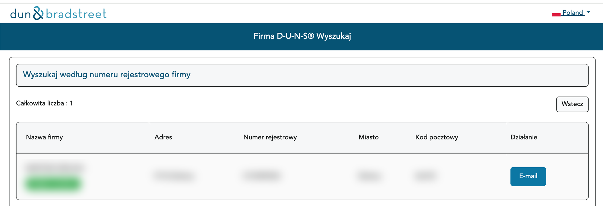
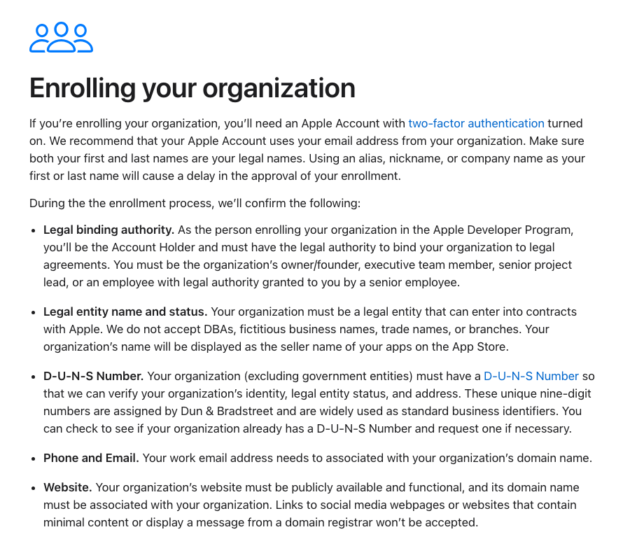
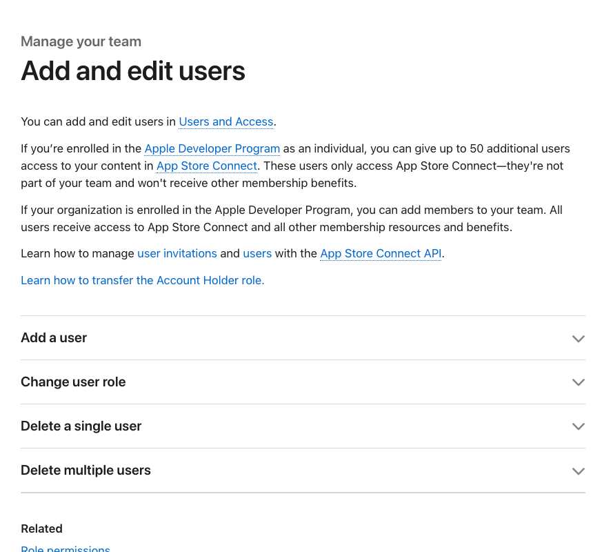
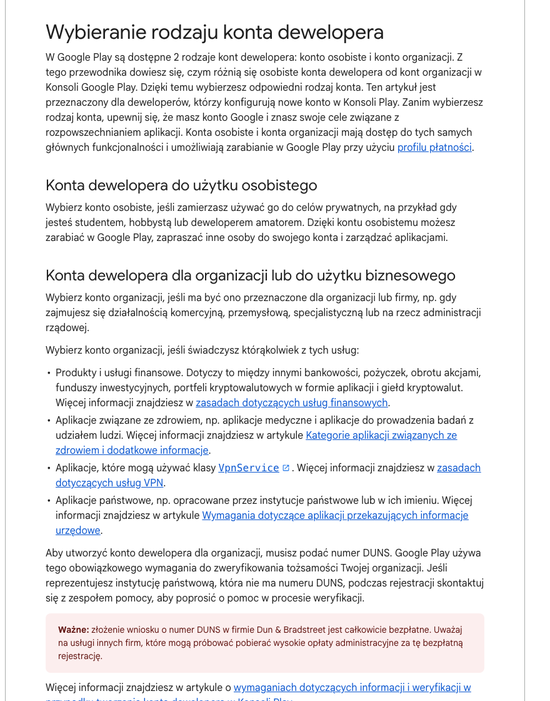
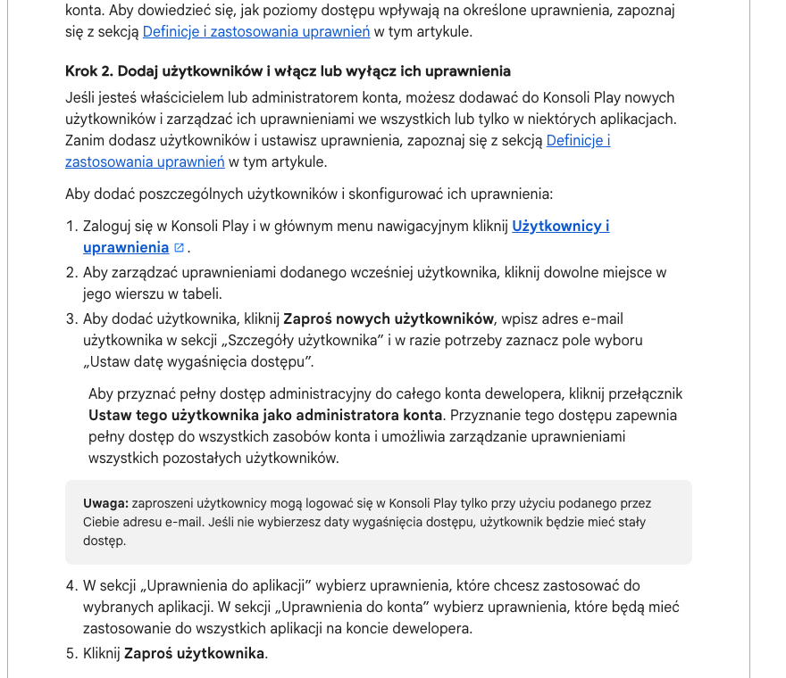

Jak założyć konta deweloperskie Apple i Google, żeby Twoja aplikacja ukazała się pod nazwą Twojej firmy. Większość pracy wykonujemy my. Od Ciebie potrzebujemy około godziny i kilku dokumentów.
~1 godzinaTwojej pracy, najlepiej razem z nami na spotkaniu online
1–2 tygodnieoczekiwania na weryfikację; w tym czasie przygotowujemy aplikację
99 USD / rok + 25 USDopłaty Apple (co roku) i Google (jednorazowo); numer D-U-N-S jest bezpłatny
Dlaczego konto ma być Twoje?
Apple wymaga, żeby aplikacje tworzone na wspólnej platformie publikował właściciel ich treści, a nie dostawca platformy (App Store Review Guidelines, pkt 4.2.6). Google zaleca osobne konto dla każdej firmy. Dzięki temu w sklepach jako wydawca widnieje Twoja firma, a aplikacja i jej oceny należą do Ciebie.
Co robimy my: po założeniu kont dodajesz nas jako administratora. Budujemy aplikację, przygotowujemy kartę w sklepie, publikujemy ją i aktualizujemy. Ty niczego nie musisz klikać w sklepach.
Przygotuj przed startem
Lista zależy od formy firmy. Sprawdź, czy prowadzisz jednoosobową działalność (JDG) czy spółkę (np. sp. z o.o., spółka komandytowa).
Zawsze potrzebne
Dane firmy dokładnie jak w CEIDG lub KRS: pełna nazwa, adres, NIP
Numer D-U-N-S (krok 1, bezpłatny). Przy JDG potrzebny tylko do Google Play
Telefon komórkowy i kartę płatniczą
Osobę uprawnioną do reprezentowania firmy (właściciel, członek zarządu albo pełnomocnik)
Konto Apple (Apple ID) i konto Google tej osoby. Jeśli ich nie masz, założysz je w kilka minut, opis poniżej
Dowód osobisty albo paszport. Apple prosi o zdjęcie dokumentu przy zakładaniu konta deweloperskiego
iPhone albo iPad, choćby pożyczony na jeden dzień. Apple najczęściej potwierdza tożsamość w aplikacji Apple Developer na takim urządzeniu. Jeśli go nie masz, przejdziemy to razem na spotkaniu
Jak założyć konto Apple (Apple ID). Jeśli masz iPhone'a, prawdopodobnie już je masz: Ustawienia → Twoje imię na górze. Jeśli nie, wejdź na account.apple.com i kliknij Utwórz konto Apple. Wpisz prawdziwe imię i nazwisko, takie jak w dowodzie, oraz swój numer telefonu. Na ten numer będą przychodzić kody SMS przy logowaniu; to jest weryfikacja dwuetapowa, którą Apple wymaga. Wystarczy zwykły telefon, także z Androidem.
Jak założyć konto Google. Wystarczy zwykłe konto Gmail, także to, którego już używasz. Jeśli nie masz, wejdź na accounts.google.com → Utwórz konto → Do celów służbowych lub firmowych. Google też poprosi o numer telefonu.
JDG (konto indywidualne w Apple)
Strona internetowa nie jest potrzebna. Nie jest potrzebny też e-mail w domenie firmy ani D-U-N-S w Apple
Apple zakłada konta firmowe tylko dla osób prawnych, więc przy JDG wybierasz konto Individual / Sole Proprietor. W App Store jako wydawca widnieje Twoje imię i nazwisko, a nie nazwa firmy; aplikacja nadal ma nazwę i logo Twojego studia
W Unii Europejskiej Apple pokazuje na karcie aplikacji dane kontaktowe wydawcy prowadzącego działalność (adres, telefon, e-mail). Jeśli JDG jest zarejestrowana pod adresem domowym, ten adres może być widoczny
Konto indywidualne można później przenieść na spółkę, gdy ją założysz (przez wsparcie Apple, z numerem D-U-N-S spółki)
Tylko spółka (konto firmowe w Apple)
Stronę internetową firmy na własnej domenie (np. twojafirma.pl). Apple wymaga działającej strony z treścią o firmie; profil na Facebooku lub Instagramie ani pusta strona nie wystarczą. Jeśli jej nie masz, przygotujemy prostą stronę, potrzebna będzie tylko domena
Adres e-mail w domenie firmy (np. kontakt@twojafirma.pl). Apple nie akceptuje adresów Gmail dla kont firmowych
Polityka prywatności i regulamin nie są potrzebne do założenia kont. Wymagają ich dopiero karty aplikacji w sklepach. Przygotowujemy je my i publikujemy pod adresem Diecika, więc nie potrzebujesz na nie własnej strony. Możesz też podać linki do własnych dokumentów.
1 Numer D-U-N-S (bezpłatny)
D-U-N-S to dziewięciocyfrowy numer firmy w bazie Dun & Bradstreet. Apple i Google sprawdzają na jego podstawie, że Twoja firma istnieje. Wiele polskich firm już go ma, bo D&B pobiera dane z CEIDG i KRS.
Wejdź na dunsnumberlookup.dnb.com, wybierz kraj Poland i wyszukaj firmę po numerze rejestrowym (NIP).
Jeśli firma się pojawi, kliknij E-mail. Numer przyjdzie na adres przypisany do firmy.
Jeśli firmy nie ma: na developer.apple.com/enroll/duns-lookup zaloguj się kontem Apple i złóż bezpłatny wniosek. Numer przychodzi zwykle w ciągu 5 dni roboczych, czasem później.
Po otrzymaniu numeru odczekaj około 2 dni robocze, zanim użyjesz go w Apple. Apple potrzebuje czasu na pobranie danych z D&B.

Wynik wyszukiwania po NIP w Dun & Bradstreet. Przycisk „E-mail” wysyła numer D-U-N-S (dane firmy zamazane).
Nie płać za numer D-U-N-S. Niektóre firmy pośredniczące pobierają wysokie opłaty za tę bezpłatną usługę. Dane we wniosku muszą być identyczne jak w CEIDG lub KRS; różnice to najczęstsza przyczyna odrzucenia.
2 Konto Apple Developer
Wejdź na developer.apple.com/programs/enroll i kliknij Start your enrollment. Zaloguj się Apple ID osoby uprawnionej.
Wybierz Organization (spółka) albo Individual / Sole Proprietor (JDG).
Spółka: podaj nazwę prawną firmy, numer D-U-N-S, stronę WWW, e-mail w domenie firmy i telefon. JDG: podajesz swoje dane osobowe i telefon; bez D-U-N-S, strony i domeny.
Potwierdź tożsamość, jeśli Apple o to poprosi (zdjęcie dokumentu w aplikacji Apple Developer).
Po weryfikacji zaakceptuj umowę Apple Developer Program License Agreement i opłać członkostwo (99 USD rocznie, cena w złotówkach pokaże się przy płatności).

Wymagania Apple dla konta firmowego: uprawnienie do zawierania umów, status prawny, D-U-N-S, e-mail w domenie firmy i działająca strona WWW.
Dodaj nas do zespołu (po zatwierdzeniu konta)
Zaloguj się na appstoreconnect.apple.com i otwórz Users and Access.
W sekcji People kliknij + i wpisz: imię Bartosz, nazwisko Szeliga, e-mail szebartek@gmail.com.
Wybierz rolę Admin i zaznacz dostęp do Certificates, Identifiers & Profiles.
Kliknij Invite. Zaproszenie wygasa po 3 dniach, więc daj nam znać od razu.

Pomoc Apple: dodawanie użytkowników w App Store Connect (Users and Access).
Ty pozostajesz właścicielem konta (Account Holder). Co roku Apple poprosi Cię o odnowienie członkostwa i czasem o akceptację nowej wersji umowy. Przypomnimy Ci o tym.
3 Konto Google Play Console
Wejdź na play.google.com/console/signup i zaloguj się kontem Google osoby uprawnionej.
Wybierz konto dla organizacji (także przy JDG) i podaj numer D-U-N-S, dane firmy i telefon. Stronę WWW podaj, jeśli ją masz.
Opłać jednorazową rejestrację (25 USD) i przejdź weryfikację tożsamości i organizacji. Trwa zwykle kilka dni.
Dlaczego konto organizacji, a nie osobiste? Google wymaga konta organizacji dla aplikacji związanych ze zdrowiem. Nowe konta osobiste muszą też przed publikacją przejść test z co najmniej 12 testerami przez 14 dni; ten wymóg dotyczy kont osobistych.

Pomoc Google Play: rodzaje kont dewelopera. Konto organizacji wymaga numeru D-U-N-S.
Dodaj nas do konta
W Play Console wybierz Użytkownicy i uprawnienia.
Kliknij Zaproś nowych użytkowników i wpisz adres szebartek@gmail.com.
Włącz przełącznik Ustaw tego użytkownika jako administratora konta.
Kliknij Zaproś użytkownika. Zaproszenie jest ważne 30 dni.

Pomoc Google Play: zapraszanie użytkownika i nadanie uprawnień administratora.
4 Co nam przekazujesz
Co
Szczegóły
Potwierdzenie zaproszeń
Krótki e-mail, że zaprosiłeś nas w Apple i Google
Logo
Najlepiej SVG albo PNG z przezroczystym tłem, wersja jasna i ciemna
Kolory marki
Kody kolorów (np. z księgi znaku albo strony WWW); jeśli ich nie masz, dobierzemy je
Nazwa aplikacji
Do 30 znaków, np. nazwa studia
Kontakt dla klientów
E-mail i telefon widoczne w aplikacji i w sklepach
Polityka prywatności i regulamin
Nic nie musisz publikować. Generujemy je z danych Twojej firmy i hostujemy w Diecik; Ty je akceptujesz. Jeśli masz własne, podaj linki
Harmonogram
Kiedy
Ty
My
Dzień 1
D-U-N-S, start rejestracji w Apple i Google
Marka, konfiguracja aplikacji, konta zespołu w panelu
Tydzień 1–2
Czekasz na weryfikację, zapraszasz nas
Szablony planów i ankiet, pilotaż z kilkoma klientami
Tydzień 2–4
Akceptujesz kartę sklepu
Publikacja w App Store i Google Play
Najczęstsze pytania
Czy muszę cokolwiek robić po publikacji? Nie. Aktualizacje i wymagania sklepów obsługujemy my. Raz w roku odnawiasz członkostwo Apple.
Do kogo należy aplikacja? Karta w sklepie, oceny i konto należą do Twojej firmy. Platformę i kod dostarcza Diecik.
Co, jeśli coś pójdzie nie tak przy weryfikacji? Najczęściej chodzi o różnice w nazwie lub adresie między D&B, CEIDG/KRS i formularzem. Pomożemy to wyjaśnić z Apple, Google albo D&B.
Nie chcę zakładać kont. Możesz zacząć od wspólnej aplikacji Diecik. Twoi klienci instalują Diecik, a po zaproszeniu widzą w niej plany, ankiety i czat od Twojej firmy, z nazwą firmy i opiekunami przy planach. Start jest natychmiastowy, ale aplikacja ma nazwę, logo i kolory Diecika; Twoje logo pojawia się na planach w PDF. Własną aplikację możesz dodać później.